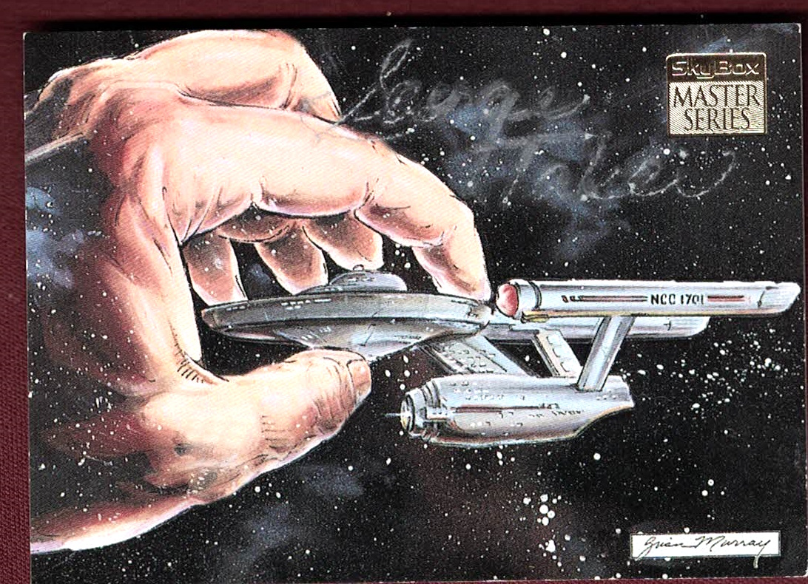

Product No. HEA-0286
$150
Shipping: $8.95
Description
Signed 3.5x2.5 color trading card. Not inscribed.
Full Description
George Takei George Takei is an American actor, author, and activist best known for portraying Hikaru Sulu in the original Star Trek television series and subsequent Star Trek films. He was born on April 20, 1937, in Los Angeles, California. Takei began acting in film and television during the late 1950s and joined Star Trek when the series premiered in 1966. As Sulu, helmsman of the USS Enterprise, he became one of the most recognizable members of the Star Trek cast and later reprised the role in several feature films. Beyond Star Trek, Takei has appeared in numerous television programs, films, stage productions, and voice roles. He has also become widely known for his public speaking and social activism. As a child during World War II, Takei and his family were forcibly relocated to U.S. incarceration camps for Japanese Americans. He has frequently spoken and written about that experience. His life story inspired the Broadway musical Allegiance, in which he also performed. Takei has written several books and remains a prominent figure in popular culture, particularly among Star Trek fans.
Condition
Very good